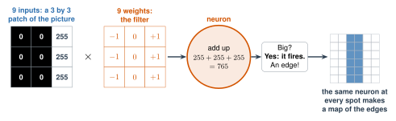
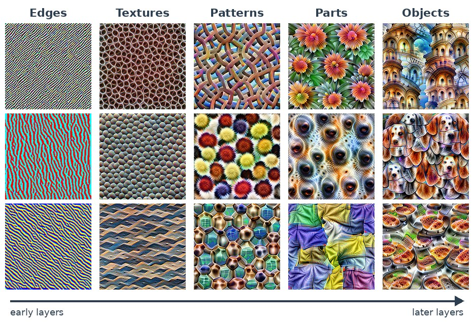

2.8 - How AI Sees
In Lesson 2.7, your AI told Rock from Paper from Scissors. But to a computer, a photo is a grid of numbers. Nothing else.
So how does a network find a hand in a grid of numbers? It uses neurons, like the ones you built. And it uses layers: each layer finds something a little more complicated than the layer before.
Today’s Plan (40 minutes)
- 🔥 Warm Up Color by number 7 min
- 👥 Learn Together Pixels, filters, and layers 13 min
- 🛠️ Try It Watch the layers 14 min
- 💬 Talk About It What could a car miss? 6 min
- 🟦 pixel: one tiny square of a picture. It’s stored as a number.
- 🔍 filter: a small grid of weights that slides over a picture to find something, like edges
- 📐 edge: a place where a picture changes fast from dark to light
- 👁️ computer vision: AI that finds things in pictures and video
Printable lesson sheet - the sheet you write on today.
🔥 Warm Up
Your sheet has a grid of numbers. Color every square with a 1. Leave every 0 white. What is the picture?
You turned numbers into a picture. A computer screen does the same thing millions of times a second.
A camera does the opposite. It turns a picture into numbers.
👥 Learn Together
2.8.1 - Pixels Are Numbers
Zoom in on any photo and you see tiny squares. Each square is a pixel.
- In a black-and-white picture, each pixel is one number: 0 is black, 255 is white, and the numbers between are grays.
- In a color picture, each pixel is three numbers: how much red, green, and blue.
- A phone photo can have about 12 million pixels. That’s about 36 million numbers!
2.8.2 - A Filter Is a Neuron
Where does a picture change fast from dark to light? That’s an edge. Edges show where things begin and end.
To find edges, a vision network uses a filter. A filter is a neuron with 9 inputs: a 3 by 3 patch of the picture. Its 9 weights are the filter’s numbers.

- Multiply the 9 picture numbers by the 9 weights, and add. That’s the same multiply, add, compare as the neuron in Lesson 2.4.
- If the total is far from 0, the neuron fires: there’s an edge here. (A big minus number is an edge too, going the other way: light to dark.) Where the picture is the same on both sides, the \(-1\)s and \(+1\)s cancel. The total is 0: no edge.
- Then the same neuron moves one square over and looks again. It does this at every spot. Its answers make a new picture: a map of the edges.
2.8.3 - Layers: Edges, Then Shapes, Then Things
Layer 1 finds edges. Layer 2 doesn’t look at the picture. It looks at layer 1’s maps. Where an up-and-down edge meets a side-to-side edge, a layer 2 neuron finds a corner.
Every layer builds on the one before: edges, then corners and curves, then patterns, then parts, then whole things. Here’s what real neurons look for, layer by layer:

Nobody. Nobody told this network to look for stripes, flowers, or dog noses. Training found every one of its filters, the same way the network in Lesson 2.6 found its weights.
The first layer of almost every vision network ends up finding edges, like the filters you’ll try today.
- Self-driving cars find lanes, signs, other cars, and people.
- Phones find your face to unlock.
- Doctors use it to look for problems in X-rays.
- Farms use it to find sick plants.
🛠️ Try It
2.8.4 - Watch the Layers
This is a tiny vision network with two layers. Layer 1 has two edge neurons. Layer 2 has a corner neuron. Work with a partner.
- Choose the square. Where does each edge neuron fire? Where does the corner neuron fire?
- Click a bright square in an edge map. Read the math. Then click a pale one.
- Click a green square in the corner map. Why did it fire?
- Try the L, the T, and the plus. Count the corners yourself first. Does the network agree?
- Try the circle. A circle has no corners. What does the network say? Why?
- Draw your own shape. Can you fool the corner neuron?
numbers: 0 dark, 255 light
each one is copied to every spot
looks at layer 1, not the picture
Zoom in. A circle made of square pixels has tiny steps. Each step is a tiny corner, and the corner neuron can’t tell a tiny corner from a big one. It only sees a 3 by 3 patch.
Real networks have many more layers. Each layer looks at a bigger piece of the picture than the one before. So later layers can tell a smooth curve from a sharp corner, and a circle from a square.
💬 Talk About It
A self-driving car sees only numbers. What if it sees something it never saw in training: a person in a costume, snow on a stop sign, or a kangaroo?
- A computer sees … , but I see …
- A self-driving car could make a mistake when … , because …
- Computer vision is helpful when … , and dangerous when …
🚀 Go Further
Do the edge problem on your sheet, with a partner. A tiny picture has dark squares (0) on the left and bright squares (9) on the right.
- Put the up-and-down filter over the first 3 columns. Multiply each pair of numbers. Add all 9.
- Move the filter one column to the right. Do it again. Do all 4 places.
- Where are the big answers? Why there?
- Use the tool below to try more filters. Choose the house and turn on show the numbers. Click a square on the right to check the math.
In the tool above, choose the blur filter. Click a square and read the math. Why does blur add all 9 numbers and divide by 9? (Hint: what is the mean of 9 numbers?)
Draw a 10 by 10 picture on grid paper. Write it as numbers (0 and 1) on another paper. Give only the numbers to a partner. Can they draw your picture? This is how pictures travel over the internet.
🔭 Explore More: layers: from edges to a cat, and more pictures of what neurons see. Read it on your own, if you want to learn more.